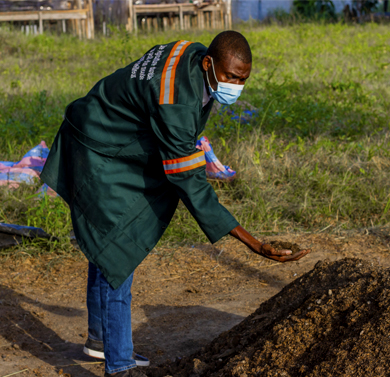
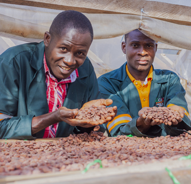
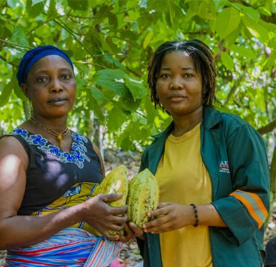
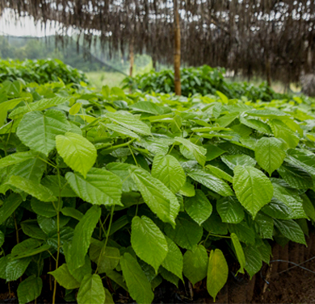

Kognagnan Cacao
Découvrez notre programme dédié à la durabilité socio-environnementale, au développement humain et à la valorisation d'un cacao de spécialité d'exception.

Production d'intrants biologiques
Nous encourageons nos agriculteurs à adopter des pratiques respectueuses de l'environnement en produisant et en utilisant des engrais et pesticides organiques. Cela permet non seulement de préserver la fertilité de nos sols et la santé de nos producteurs, mais aussi de garantir un cacao de haute qualité, cultivé en symbiose avec la nature.
En savoir plus
Production de cacao fine saveur
Notre terroir exclusif et notre maîtrise parfaite des processus post-récoltes (fermentation et séchage délicats) nous permettent de produire un cacao "fine saveur" d'exception. Ses notes aromatiques uniques sont très prisées par les chocolatiers artisans du monde entier cherchant un profil gustatif complexe et authentique.
En savoir plusBancarisation & assurance maladie
L'autonomisation financière passe par la sécurité. Nous facilitons l'ouverture de comptes bancaires (bancarisation) pour nos producteurs, sécurisant leurs revenus monétaires. De plus, une couverture d'assurance maladie intégrée protège la santé des familles agricoles, garantissant ainsi sérénité et stabilité aux revenus du foyer d'année en année.
En savoir plus
Promotion du genre & lutte contre le travail des enfants
L'égalité des chances est au cœur de notre modèle coopératif. Nous menons des actions décisives pour l'autonomisation de la femme en milieu rural et mettons en place des programmes stricts de suivi et de remédiation afin d'éradiquer toutes les pires formes de travail des enfants dans nos bassins de production.
En savoir plus
Agroforesterie
Pour lutter efficacement contre la déforestation et le changement climatique, nous accompagnons nos membres dans la transition vers l'agroforesterie. En associant judicieusement arbres fruitiers et forestiers avec nos cacaoyers, nous créons un écosystème résilient, ombragé et fertile, assurant des revenus diversifiés pour les producteurs.
En savoir plus